Buildings in danger
These are a examples of buildings that are protected at some level and are in danger of being destroyed. Click the info button to learn more.
 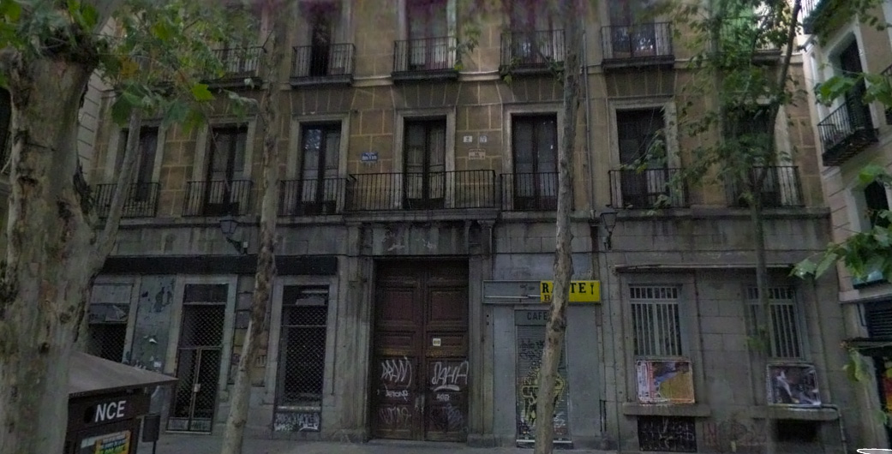Plaza del Duque de Alba, 2
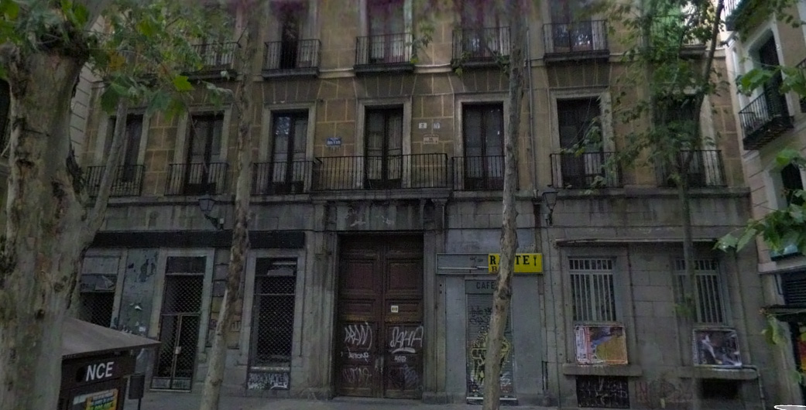Plaza del Duque de Alba, 2![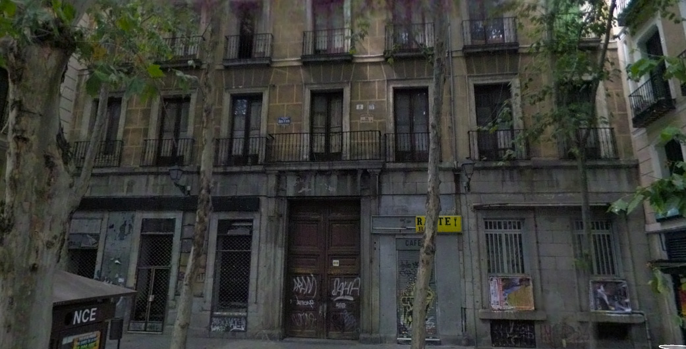Plaza del Duque de Alba, 2This historical building has been used for many different purposes over the years. During the eighteenth century it was used as a school for the children of the servants of Carlos III. In 1791 it was transformed into a noble residence. In the nineteenth century, it became the residence of the Duchess of Sweden, wife of Manuel Godoy, prime minister of Charles IV. Today the building is vacant and in horrible condition. The government aquired the building to put the office of Social Services of the municipalitySource. Photo Credit: Google Maps Streetview" >](gallery/photos/duquesa.jpg){kind=link}
This historical building has been used for many different purposes over the years. During the eighteenth century it was used as a school for the children of the servants of Carlos III. In 1791 it was transformed into a noble residence. In the nineteenth century, it became the residence of the Duchess of Sweden, wife of Manuel Godoy, prime minister of Charles IV. Today the building is vacant and in horrible condition. The government aquired the building to put the office of Social Services of the municipality
Source. Photo Credit: Google Maps Streetview
" > 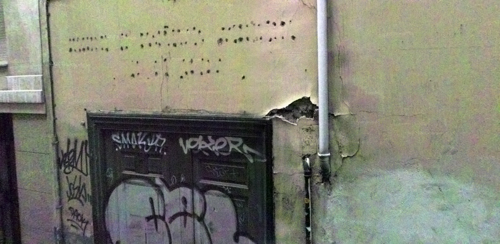Calle Dos Amigos 4.{kind=link}
According to a document from 2010 by the Governing Board of the City of Madrid, the building was authorized to create a Social Care Centre for the Elderly. Owned by the government, this building has the highest level of protection (Integral), but now it is vacant.
Photo Credit: Google Maps Streetview
"> 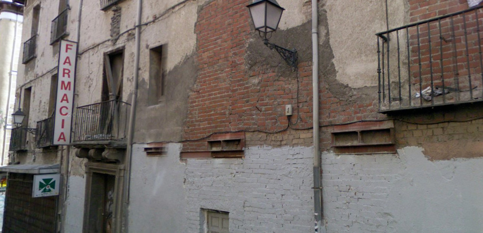This building was a historic home and was built in the eighteenth century. It had a unique coat of arms above the main entrance. It had the third level of protection (Parcial) and was owned by the government. It was demolished earlier this year.
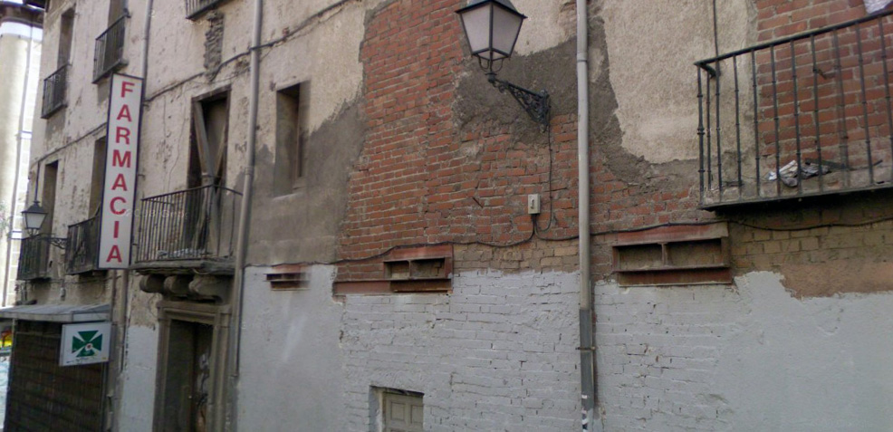This building was a historic home and was built in the eighteenth century. It had a unique coat of arms above the main entrance. It had the third level of protection (Parcial) and was owned by the government. It was demolished earlier this year.{kind=link}
Photo Credit: Google Maps Streetview
"> 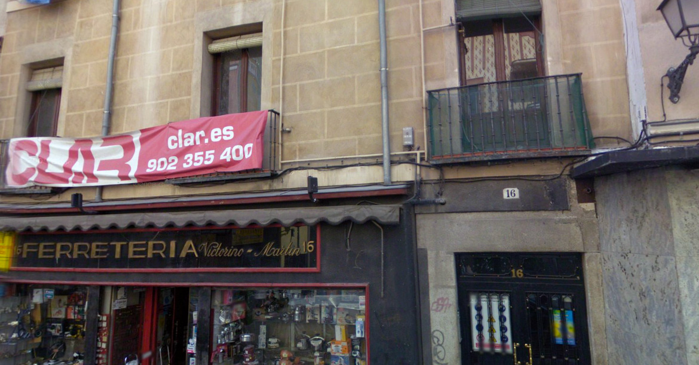This seventeenth century property is a two-story building with a rear garden. According to the City Hall, it was build in 1656 and is proteced at the second level (Estructural). It is a private residence and during its last ITE inspecion, the grade was unfavorable due to the general state of conservation of roofs and the general state of the plumbing and sanitation network.
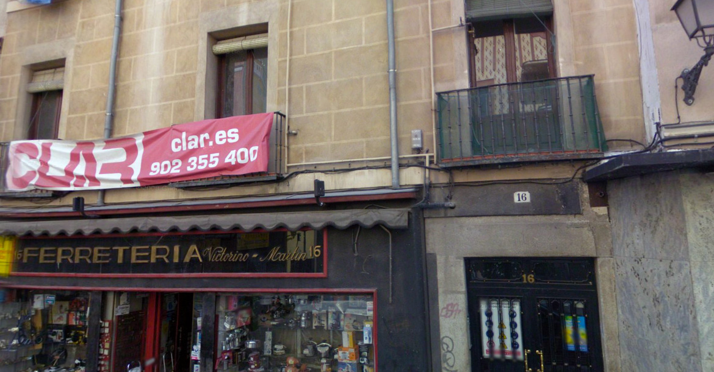This seventeenth century property is a two-story building with a rear garden. According to the City Hall, it was build in 1656 and is proteced at the second level (Estructural). It is a private residence and during its last ITE inspecion, the grade was unfavorable due to the general state of conservation of roofs and the general state of the plumbing and sanitation network.{kind=link}
Photo Credit: Google Maps Streetview
"> 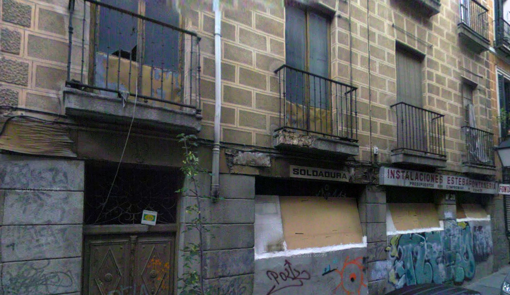The building located here is a private and the year of construction is unknown.'residential' building and is protected at the second level by the government (Estructural){kind=link}
Photo Credit: Google Maps Streetview
"> 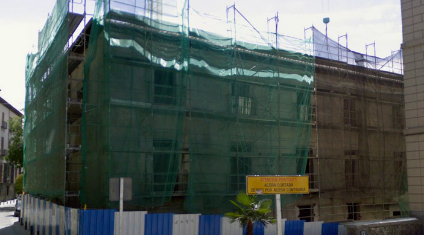Calle Doctor Letamendi 1{kind=link}
Built in the sixteenth and seventeenth centuries, this building was purchased by the city in 1998 with the intention of making it the Fundación Nuevo Siglo. The building was protected at the highest level by the government (Singular). El Pais reported that the building was torn down without license in 2002.
Source. Photo Credit: Google Maps Streetview">
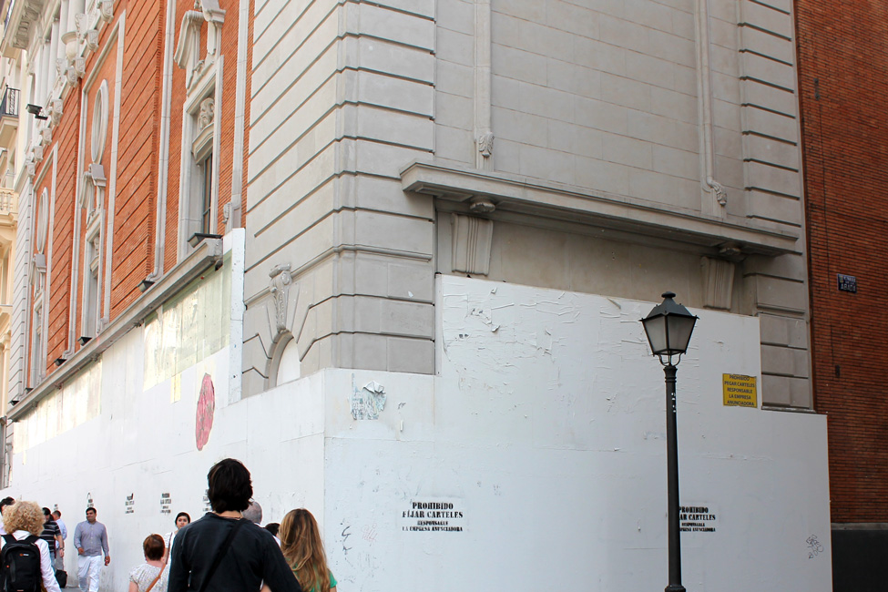Calle Gran Via 35{kind=link}
This theather was inaugurated in 1926 and is in a very prominant location of the Gran Via. The building was purchased by Caja Madrid (now Bankia Bank). The original plan was to restore and rehibilitate the building, keeping the historical heritage. It is currently empty and the government has suspended construction. It is currently protected under the highest level of protection (Integral).
Source" >
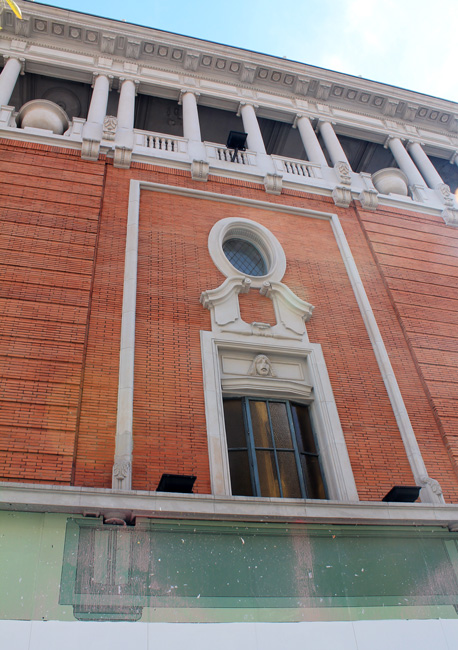Calle Gran Via 35{kind=link}
This theather was inaugurated in 1926 and is in a very prominant location of the Gran Via. The building was purchased by Caja Madrid (now Bankia Bank). The original plan was to restore and rehibilitate the building, keeping the historical heritage. It is currently empty and the government has suspended construction. It is currently protected under the highest level of protection (Integral).
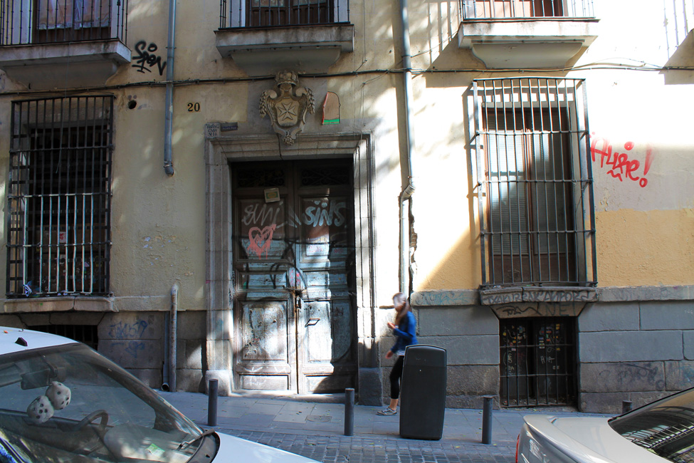This building was built in the seventeenth century and is said to have belonged to Don Andrés de Ayala Godoy. There is a historical shield located above the main entrance that supposedly dates to between 1750 and 1765. This building was privately owned but was purchased by the City Hall to convert into a government building. It has the highest level of protection (Integral). It is currently empty and in very bad condition.{kind=link}
Source" >
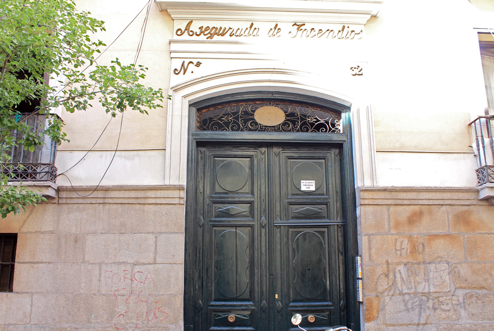This building was built in 1779 and was the house of Infanta Carlota. This building was rehabilitated but many of the historical heritage that existed in the interior disappeared. The government stated that they would expropriate the building and restore it, but the work was never carried out. The building has the highest level of protection (Singular).{kind=link}
Source" >
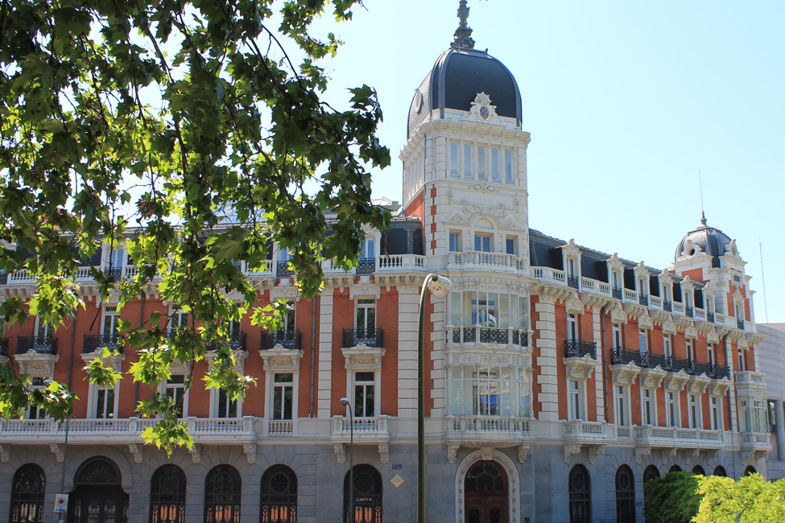Also known as the Real Compañía Asturiana de Minas, this building was built in 1895 and has the highest level of protection (Singular). he building “suffered various alterations” in 1997 and was abandoned for some time until the government of Madrid took over, according to the City Hall. During its last inspection on November 30, 2012, the building was listed as “unfavorable” because of the general state of the structure and foundation, the general state of the facade, exterior and walls, and the state of the elements of existing access.![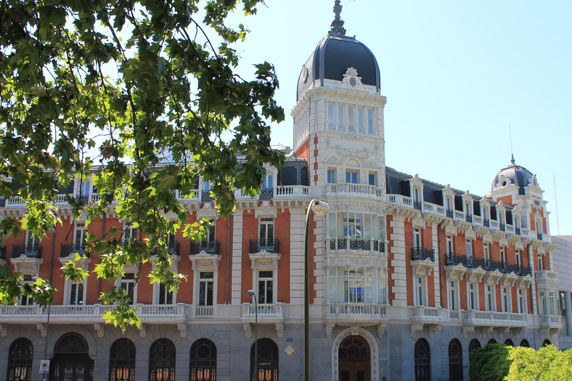Also known as the Real Compañía Asturiana de Minas, this building was built in 1895 and has the highest level of protection (Singular). he building “suffered various alterations” in 1997 and was abandoned for some time until the government of Madrid took over, according to the City Hall. During its last inspection on November 30, 2012, the building was listed as “unfavorable” because of the general state of the structure and foundation, the general state of the facade, exterior and walls, and the state of the elements of existing access.Source" >](gallery/photos/IMG_6146.jpg){kind=link}
Source" >
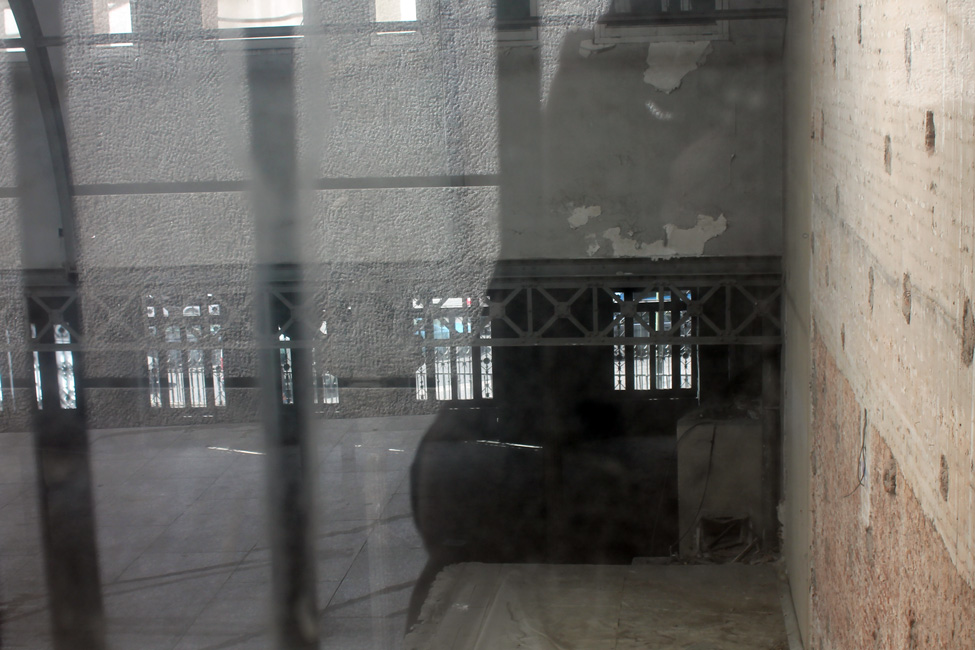Also known as the Real Compañía Asturiana de Minas, this building was built in 1895 and has the highest level of protection (Singular). he building “suffered various alterations” in 1997 and was abandoned for some time until the government of Madrid took over, according to the City Hall. During its last inspection on November 30, 2012, the building was listed as “unfavorable” because of the general state of the structure and foundation, the general state of the facade, exterior and walls, and the state of the elements of existing access.![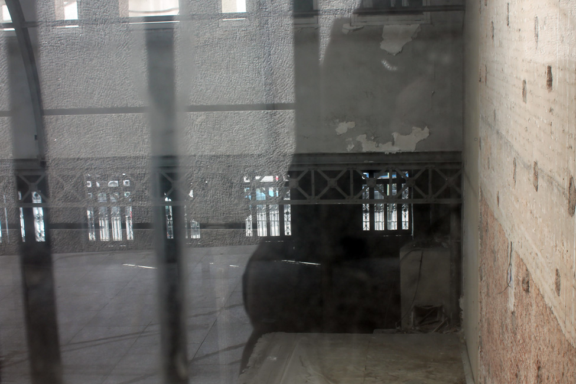Also known as the Real Compañía Asturiana de Minas, this building was built in 1895 and has the highest level of protection (Singular). he building “suffered various alterations” in 1997 and was abandoned for some time until the government of Madrid took over, according to the City Hall. During its last inspection on November 30, 2012, the building was listed as “unfavorable” because of the general state of the structure and foundation, the general state of the facade, exterior and walls, and the state of the elements of existing access.Source" >](gallery/photos/IMG_6158.jpg){kind=link}
Source" >
Made by Galleria.